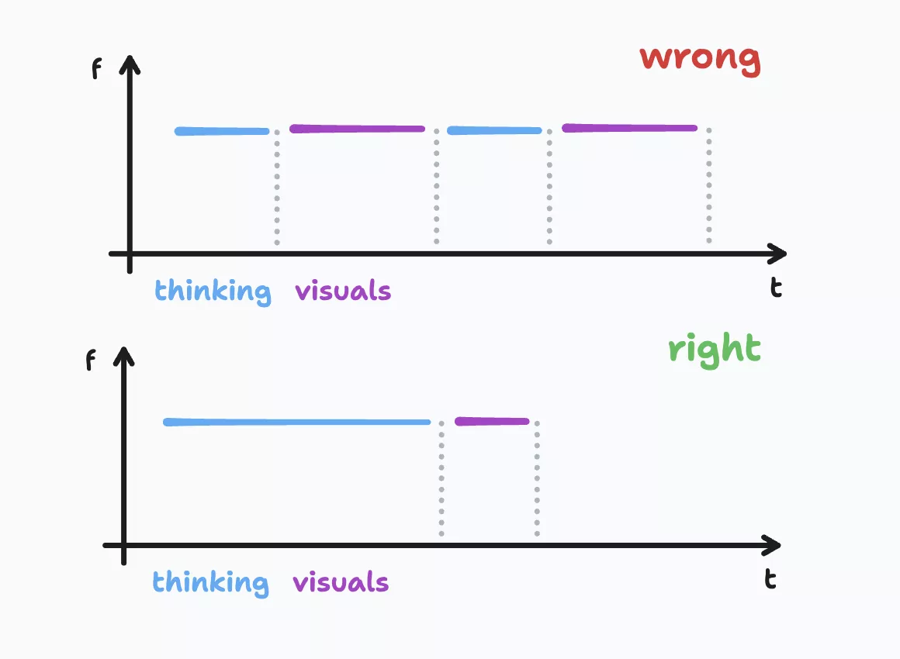

Stunning Presentations. Fast.

Do you want to create stunning presentations in just 15 minutes?
How often when you need to make presentation it becomes entire saga of preparations, updates and fixes? All of it because you use wrong process and tools.
Let’s dive a bit into the process of creating a presentation. In most cases, you are on a call where 80% of the content is delivered verbally and only 20% is shown on the screen to highlight your thoughts. However, when preparing a presentation, you often spend 80% of your time creating only 20% of the content.
Why is this the case? There is the famous 80 / 20 Pareto principle, which states that 80% of your results come from 20% of your efforts. But why does this apply to making presentations? Simply because these 20% of visuals interrupt your thinking process. In most of the popular tools, like PowerPoint, you start with a white blank canvas, which is completely wrong if you want to focus on the 80% of your content.
How to solve this? Even in PowerPoint, you have themes and layouts, but that’s not where you should start. The best place to start your presentation is with plain text. Write down the structure, which in the end becomes the first slide of your presentation - the agenda. Then, start enriching the storyline with content. Once you are done with it, split your thoughts into easily digestible pieces, which in the end become the titles of your slides. As a last step, make notes which picture or graph to add, highlight text that you think will help you deliver your thoughts, and these two will be your main information for the slides.
If you want to become efficient with presentation making, you need to change the process first, which I mentioned above. As second step you need to have a tool to which you will outsource last 20% of your effort to make visuals. Up for now I was using few tools
- Pitch - https://pitch.com/
which is similar to PowerPoint but with needed functionality only, which includes layouts and themes, theme you make once and forget, layouts help you to reuse existing slide structures to place your shaped thoughts in.
- IA Presenter - https://ia.net/presenter
which great to follow the right more efficient process. You start with plain text, highlight what is really needed to be shown and drop some images and graphs. That’s it, once you have everything written you literally spend 5-15 minutes to make presentation out of it. In this tool you don’t need to bother with anything, just focus on your content, this is want really important.
